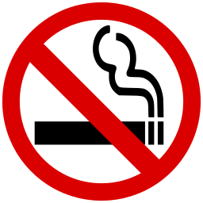

Я к вам пишу — чего же боле? Что я могу еще сказать? Теперь, я знаю, в вашей воле Меня презреньем наказать. Но вы, к моей несчастной доле Хоть каплю жалости храня, Вы не оставите меня. Сначала я молчать хотела; Поверьте: моего стыда Вы не узнали б никогда, Когда б надежду я имела Хоть редко, хоть в неделю раз В деревне нашей видеть вас, Чтоб только слышать ваши речи, Вам слово молвить, и потом Все думать, думать об одном И день и ночь до новой встречи. Но, говорят, вы нелюдим; В глуши, в деревне всё вам скучно, А мы… ничем мы не блестим, Хоть вам и рады простодушно.
